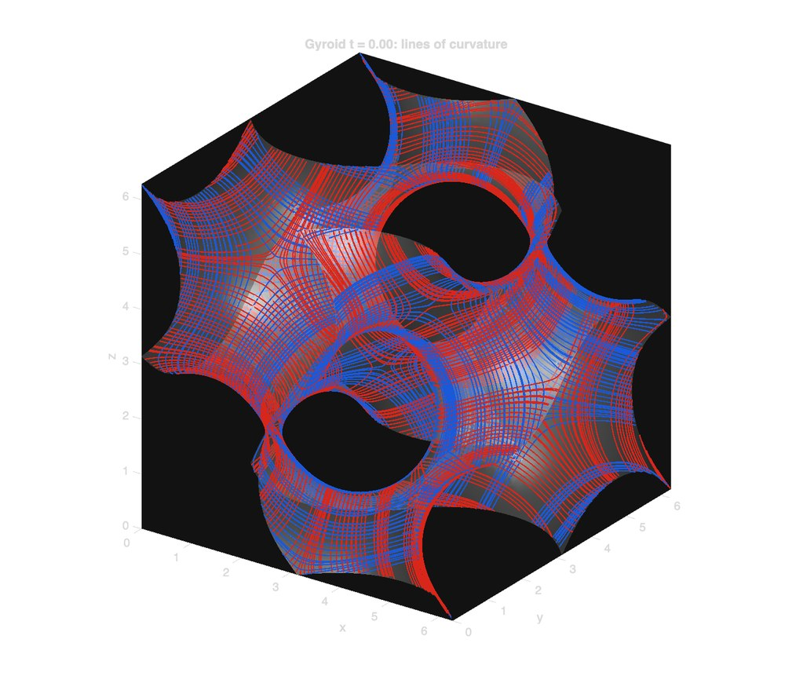
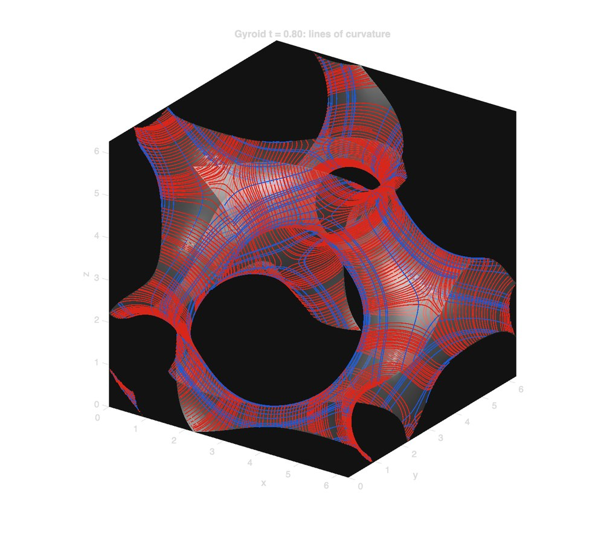
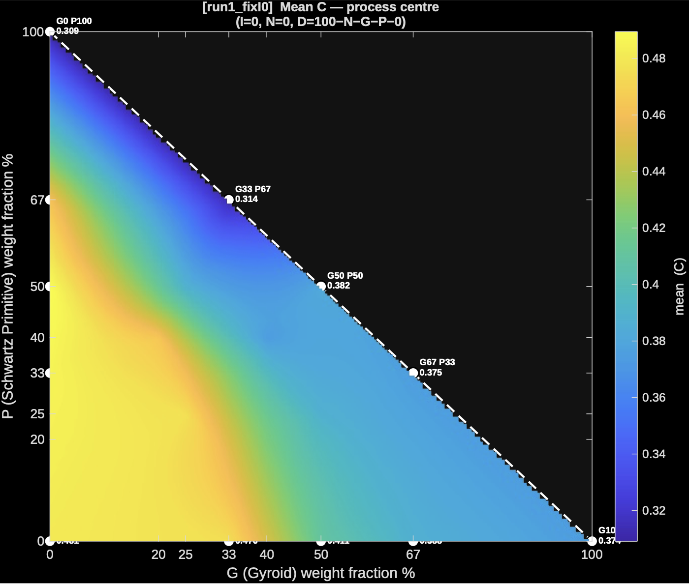
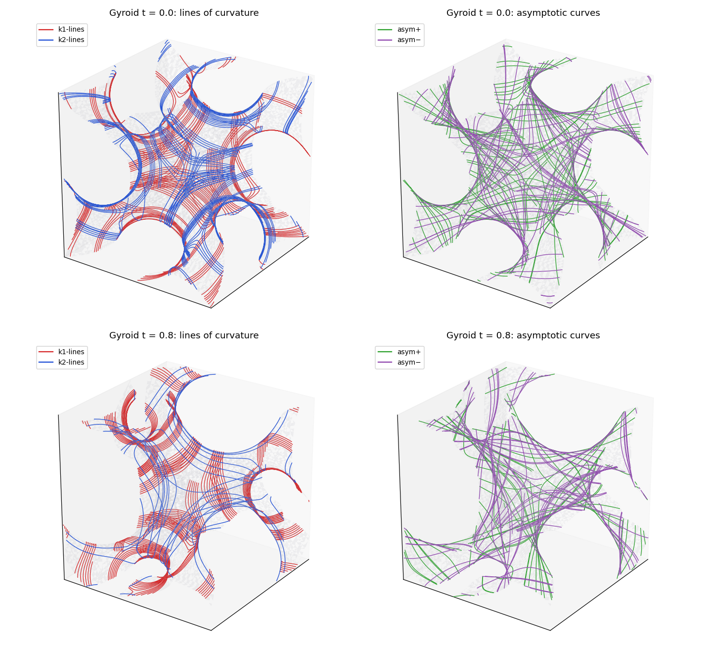
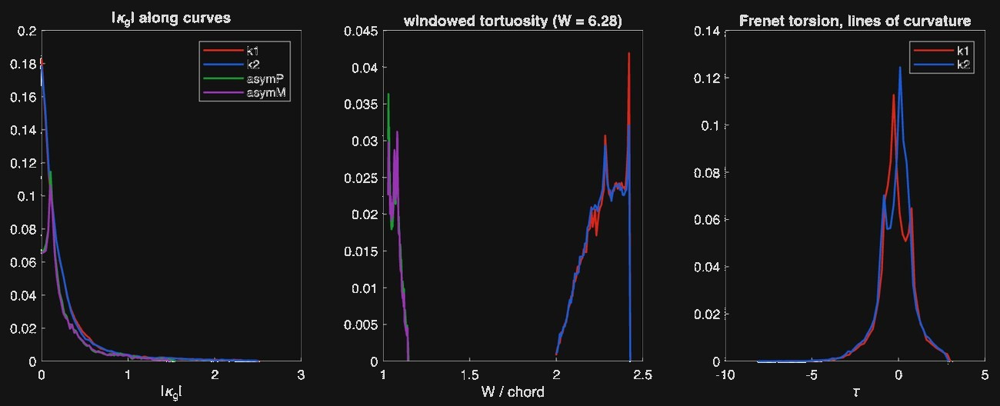

Measuring the shape of TPMS lattices
Triply periodic minimal surface (TPMS) lattices are 3D-printed structures whose performance depends on how their surfaces curve. I built two MATLAB tools to put numbers on that curvature: a 2D tool that turns any lattice STL into 29 curvature descriptors, and a 3D tool that traces how curves are organised across the analytic gyroid surface.


The project
The lab 3D-prints triply periodic minimal surface (TPMS) lattices and electroplates them to improve their thermal, mechanical and surface properties. Each lattice is a weighted blend of five TPMS families: gyroid (G), Neovius (N), Schwarz primitive (P), diamond (D) and I-WP (I). That gives a huge design space, and the open question is which geometric features explain how evenly a lattice plates and how well it performs.
Point-by-point curvature is the natural language for this. But a single average number throws away most of the information, and there was no consistent way to describe a whole lattice's curvature so it could be compared across designs. My descriptors are the geometry input to the group's plating-optimization model. That model also takes the plating solution and measured thermal performance from the heat transfer chamber.
Part 1
2D: curvature descriptors from STL meshes
What I did
The tool reads a folder of lattice STL files, works out each file's composition from its name (for example G50_N0_P50_D0_I0), and estimates the principal curvatures k1 and k2 at every mesh vertex using a cotangent-Laplacian. It cleans out degenerate-triangle spikes with a robust (MAD) filter, then summarises the curvature over the whole surface. A typical STL has 300–450k triangles and takes a few seconds per file.
The descriptors
The core of the project is the descriptor set. Instead of one curvature number per lattice, the tool keeps the whole distribution. It computes four signals at every vertex, then summarises each with seven area-weighted statistics.
| Signal | Formula | What it captures |
|---|---|---|
| C, RMS curvature | √((k1² + k2²) / 2) | How sharply the surface bends, whatever the shape |
| SI, shape index | (2/π)·atan2(k1+k2, k2−k1) | The kind of shape, from −1 to +1: cup, rut, saddle, ridge, cap. It ignores size. |
| ATC, absolute total curvature | |k1| + |k2| | Total bending in both directions, without saddle cancellation |
| W, Willmore density | (k1 − k2)² / 4 | How unequally the surface bends in its two directions (zero on a sphere) |
| Signal | mean | std | cv | p5 | median | p95 | rms |
|---|---|---|---|---|---|---|---|
| C | ● | ● | ● | ● | ● | ● | ● |
| SI | ● | ● | ● | ● | ● | ● | ● |
| ATC | ● | ● | ● | ● | ● | ● | ● |
| W | ● | ● | ● | ● | ● | ● | ● |
| S/V | one global value: surface area ÷ solid volume | ||||||
That gives 4 signals × 7 statistics = 28 columns, plus S/V: 29 descriptors per STL, written to a CSV with the composition of each lattice. Mean and Gaussian curvature (MC, GC) are also available in the code but are switched off by default.
Why distributions rather than one number? Two lattices can have the same mean curvature but very different surfaces. One is uniformly gently curved; the other is mostly flat with a few very sharp junctions. The cv (std/mean) shows how consistent the geometry is, which matters for even plating and printing. The p95 shows the worst-case sharp regions, where stress and defects concentrate.
Mapping the design space
With five blend weights summing to 100%, a 2D map means holding all but two fixed. The tool runs three slices (fixing I, D or P at zero) and draws a smooth heatmap of every descriptor across each slice, using natural-neighbour interpolation between the sampled lattices.



Slice with I = N = 0: gyroid fraction on x, primitive fraction on y, and diamond making up the rest. White dots are the lattices that were actually simulated.
What I learned
The biggest lesson from this tool was how easy it is for a result to look right and still be wrong. In early versions, mean curvature was computed as a magnitude, so it was always positive. That quietly broke the shape index on concave regions while every other signal looked fine. Fixing it meant projecting onto the vertex normal, and since then I check each descriptor against a surface where I already know the answer.
Plotting taught me something similar. My first heatmaps used cubic interpolation, which drew peaks between sparse samples that weren't actually in the data. Switching to natural-neighbour interpolation gave maps I could trust. I also found that my outlier filter was clipping real, sharp junctions in the lattice, so I loosened it from 3 to 5 times the MAD. Each of these changes came from looking closely at the output and asking whether the physics made sense.
Part 2
3D: curve mapping on the analytic gyroid
What I did
The curve networks at the top of this page come from this tool. Part 1 measures curvature point by point. Part 2 asks how the curvature is organised across the structure. Working directly from the gyroid's level-set equation, sin x cos y + sin y cos z + sin z cos x = t, rather than from a mesh, the tool traces two families of curves on the surface:
- Lines of curvature follow the directions of maximum and minimum bending.
- Asymptotic curves follow the directions in which the surface doesn't bend at all (zero normal curvature).
It seeds a grid of starting points in each unit cell and traces each curve in both directions, stepping along the principal (or asymptotic) direction field. After every step, Newton's method pulls the point back onto the surface. Because statistics are kept per curve rather than per point, the direction information that point curvature loses is preserved.

Along every curve it computes normal and geodesic curvature, geodesic torsion and Frenet torsion analytically, then reduces them to plain-language descriptors:
- Straightness: how far a curve gets compared with how far it travels.
- Direction memory: how far a curve runs before it forgets which way it started.
- Closed-loop share: how many curves close on themselves.
- Turning radius and twist pitch.
- A handedness index: whether twisting is biased left or right, which point curvature can't detect.

These curve descriptors go into a PCA alongside the 2D signals (C, SI, ATC, W), so the 3D tool extends the Part 1 descriptor set rather than replacing it. Each curve-based number comes with a bootstrapped 95% confidence interval.
The tool also maps the level-set value t to the physical part. At t = 0 the gyroid splits space into two identical interlocking channels. Raising t pushes the surface into one channel, and the wall thickens almost linearly:
| t | Mean wall thickness (× cell size) | Solid volume fraction |
|---|---|---|
| 0.2 | 0.042 | 13% |
| 0.4 | 0.083 | 26% |
| 0.6 | 0.125 | 39% |
| 0.8 | 0.167 | 52% |
| 1.0 | 0.208 | 66% |
Wall thickness ≈ 0.21 × t × cell size.
Every run starts with 26 self-checks. They include symbolic against hand-derived derivatives, closed-form against eigen-solved curvature, and analytic against finite-difference geodesic curvature (second-order convergence confirmed). They also confirm that curves stay on the surface to about 10⁻¹⁵, and they check the gyroid's cubic and inversion symmetry.
Results
For a sheet gyroid with a 5 mm cell, raising t from 0 to 0.8 (walls thickening from 0 to 0.89 mm) has three effects:
- The max-bending lines lose almost all their straightness (0.44 → 0.05) as they wrap around the thickening struts.
- The min-bending lines go from never closing to 100% closed loops.
- The handedness index rises from 0.00 to 0.17, revealing the gyroid's chirality.
What I learned
Working from the gyroid's equation instead of a mesh removed noise completely and let me validate every quantity two different ways, which made me far more confident in the results. Bootstrapping over curves showed me that a number is only useful alongside its uncertainty, and some descriptors needed many more seed points than I expected. I also found that several curve descriptors simply restate point curvature, so the tool now separates new information from redundant information before anything goes into the PCA.
Finally, I learned that symmetry can work against you. Pure TPMS have degenerate points where the curve directions aren't defined, so the tracing has to detect and skip them. I am also planning a second method, gradient-flow curves through the volume integrated with ode45, which is well suited to gradient and surface-roughness mapping.
Links
- tpms-3d-curve-mapping on GitHub (MATLAB, GPL-3.0)
- The 2D descriptor tool is MATLAB scripts that aren't public yet.